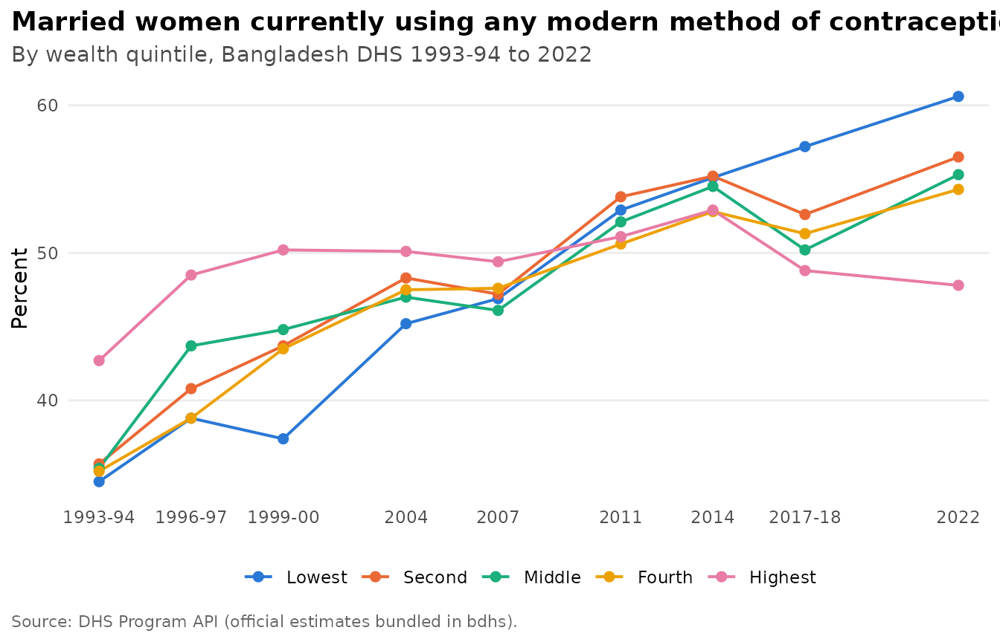

The Bangladesh Demographic and Health Survey (BDHS) has been run nine times since 1993. bdhs gives you all of it in one place: the official estimates right away, and your own copy of the microdata in one line once you have DHS access.
The surveys
bdhs_rounds()
#> # A tibble: 9 × 6
#> survey_id survey_type year year_label phase file_code
#> <chr> <chr> <int> <chr> <chr> <chr>
#> 1 BD1994DHS DHS 1994 1993-94 DHS-III 31
#> 2 BD1997DHS DHS 1997 1996-97 DHS-III 3A
#> 3 BD2000DHS DHS 2000 1999-2000 DHS-IV 41
#> 4 BD2004DHS DHS 2004 2004 DHS-IV 4J
#> 5 BD2007DHS DHS 2007 2007 DHS-V 51
#> 6 BD2011DHS DHS 2011 2011 DHS-VI 61
#> 7 BD2014DHS DHS 2014 2014 DHS-7 72
#> 8 BD2017DHS DHS 2017 2017-18 DHS-7 7R
#> 9 BD2022DHS DHS 2022 2022 DHS-8 81Functions take a survey argument, and you can refer to a
round however you like. Years, year ranges, DHS ids and DHS file codes
all work:
bdhs_survey_id(c(2022, "2017-18", 2018, "BD2014DHS", "4J", "1999-2000"))
#> [1] "BD2022DHS" "BD2017DHS" "BD2017DHS" "BD2014DHS" "BD2004DHS" "BD2000DHS"bdhs_surveys adds fieldwork dates, sample sizes and
implementing agencies, and bdhs_datasets lists every one of
the 441 data files the DHS Program distributes for Bangladesh:
bdhs_surveys[, c("survey_id", "survey_label", "fieldwork_start", "n_households", "n_women", "n_men")]
#> # A tibble: 13 × 6
#> survey_id survey_label fieldwork_start n_households n_women n_men
#> <chr> <chr> <date> <int> <int> <int>
#> 1 BD1994DHS 1993-94 1993-11-01 9174 9640 3284
#> 2 BD1997DHS 1996-97 1996-11-01 8682 9127 3346
#> 3 BD1999SPA 1999-00 1999-09-01 NA NA NA
#> 4 BD2000DHS 1999-00 1999-11-01 9854 10544 2556
#> 5 BD2001OTH 2001 2001-01-01 99202 103796 NA
#> 6 BD2004DHS 2004 2004-01-01 10500 11440 4297
#> 7 BD2007DHS 2007 2007-03-01 10400 10996 3771
#> 8 BD2011DHS 2011 2011-07-01 17141 17842 3997
#> 9 BD2014DHS 2014 2014-06-01 17300 17863 NA
#> 10 BD2014SPA 2014 2014-06-01 NA NA NA
#> 11 BD2017DHS 2017-18 2017-10-01 19457 20127 NA
#> 12 BD2017SPA 2017 2017-08-01 NA NA NA
#> 13 BD2022DHS 2022 2022-08-01 30018 30078 NAOfficial estimates: no account needed
Every published DHS estimate for Bangladesh is bundled.
bdhs_official() returns tidy rows, and
bdhs_plot_trend() draws them:
bdhs_official("FP_CUSM_W_MOD")[, c("year_label", "indicator", "value")]
#> # A tibble: 9 × 3
#> year_label indicator value
#> <chr> <chr> <dbl>
#> 1 1993-94 Married women currently using any modern method of contracep… 36.6
#> 2 1996-97 Married women currently using any modern method of contracep… 42.1
#> 3 1999-2000 Married women currently using any modern method of contracep… 44
#> 4 2004 Married women currently using any modern method of contracep… 47.6
#> 5 2007 Married women currently using any modern method of contracep… 47.5
#> 6 2011 Married women currently using any modern method of contracep… 52.1
#> 7 2014 Married women currently using any modern method of contracep… 54.1
#> 8 2017-18 Married women currently using any modern method of contracep… 51.9
#> 9 2022 Married women currently using any modern method of contracep… 54.7
bdhs_plot_trend("FP_CUSM_W_MOD", by = "Wealth quintile")
See vignette("maps-and-trends") for subgroups, maps and
more.
Finding variables
bdhs_search() searches variable labels in the bundled
codebooks, indicator definitions and the harmonized variables together.
bdhs_variable() shows one variable across rounds and flags
when its labels changed:
bdhs_search("anemia|anaemia", where = "indicators")
#> # bdhs search for "anemia|anaemia": 10 matches
#>
#> ── Official DHS indicators (10) ────────────────────────────────────────────────
#> CN_ANMC_C_ANY Children with any anemia 2011
#> CN_ANMC_C_MLD Children with mild anemia 2011
#> CN_ANMC_C_MOD Children with moderate anemia 2011
#> CN_ANMC_C_SEV Children with severe anemia 2011
#> AN_ANEM_W_ANY Women with any anemia 2011
#> AN_ANEM_W_MLD Women with mild anemia 2011
#> AN_ANEM_W_MOD Women with moderate anemia 2011
#> AN_ANEM_W_SEV Women with severe anemia 2011
#> CN_ANMC_C_NUM Number of children under age 5 2011
#> CN_ANMC_C_UNW Number of children under age 5 (unweighted) 2011
bdhs_variable("v024", recode = "KR")
#> # A tibble: 8 × 6
#> survey_id recode label n_valid value_labels label_drift
#> <chr> <chr> <chr> <int> <chr> <lgl>
#> 1 BD1994DHS KR region 3874 1=barishal; 2=chittagong; 3=dha… TRUE
#> 2 BD2000DHS KR division 6832 1=barisal; 2=chittagong; 3=dhak… TRUE
#> 3 BD2004DHS KR region 6908 1=barisal; 2=chittagong; 3=dhak… TRUE
#> 4 BD2007DHS KR division 6150 1=barisal; 2=chittagong; 3=dhak… TRUE
#> 5 BD2011DHS KR region 8753 1=barisal; 2=chittagong; 3=dhak… TRUE
#> 6 BD2014DHS KR division 7886 1=barisal; 2=chittagong; 3=dhak… TRUE
#> 7 BD2017DHS KR division 8759 1=barisal; 2=chittagong; 3=dhak… TRUE
#> 8 BD2022DHS KR division 8784 1=barishal; 2=chattogram; 3=dha… FALSEThe codebooks contain names and labels only, never respondents’ values.
Microdata: the two-minute version
- Register at https://dhsprogram.com/data/new-user-registration.cfm and request the Bangladesh surveys. It is free for research.
- Download the files you need. The Stata format is recommended.
- Point bdhs at them once:
bdhs_import("~/Downloads/BDHS")From then on, any round and recode is one line away:
vignette("microdata") explains importing, storage and
the experimental downloader.
Practise with synthetic data
bdhs_simulate() generates fake data with the exact
structure of a BDHS recode: the same variable names, codes, labels and
survey design. All the examples in bdhs use it, and you can use it to
write and test your code before your DHS access comes through:
kr <- bdhs_simulate(2022, "KR")
kr[1:5, c("caseid", "v001", "v022", "v024", "m15", "m17")]
#> # A tibble: 5 × 6
#> caseid v001 v022 v024 m15 m17
#> <chr> <dbl> <dbl+lbl> <dbl+lbl> <dbl+lbl> <dbl+>
#> 1 " 1 2 2" 1 1 [barishal urban] 1 [barishal] 11 [respondent… 0 [no]
#> 2 " 1 2 2" 1 1 [barishal urban] 1 [barishal] 11 [respondent… 0 [no]
#> 3 " 1 3 2" 1 1 [barishal urban] 1 [barishal] 12 [other home] 0 [no]
#> 4 " 1 3 2" 1 1 [barishal urban] 1 [barishal] 31 [private ho… 0 [no]
#> 5 " 1 9 2" 1 1 [barishal urban] 1 [barishal] 11 [respondent… 0 [no]Simulated values are random and must never be used for conclusions.
A first analysis
Survey data need survey methods. bdhs_design() knows the
clustering, stratification and weights of every round:
des <- bdhs_design(kr)
survey::svymean(~m17, des, na.rm = TRUE)
#> mean SE
#> m17 0.30917 0.0286bdhs_estimate() goes a step further. It computes named
DHS indicators with correct standard errors, confidence intervals and
denominators:
bdhs_estimate(kr, c("rh_del_facility", "rh_del_csection"), by = "v025")
#> # BDHS estimates: 2 indicators | BD2022DHS | 95% CI
#> # A tibble: 4 × 11
#> survey_id indicator label v025 estimate se ci_low ci_high n_unweighted
#> <chr> <chr> <chr> <fct> <dbl> <dbl> <dbl> <dbl> <int>
#> 1 BD2022DHS rh_del_facil… Deli… urban 59.4 7.93 42.6 74.2 78
#> 2 BD2022DHS rh_del_facil… Deli… rural 49.7 2.96 43.7 55.8 84
#> 3 BD2022DHS rh_del_csect… Deli… urban 29.2 6.66 17.5 44.5 78
#> 4 BD2022DHS rh_del_csect… Deli… rural 31.4 4.08 23.6 40.4 84
#> # ℹ 2 more variables: n_weighted <dbl>, api_id <chr>Where next
-
vignette("microdata"): importing, reading and storing your files. -
vignette("survey-design"): weights, strata, ever-married samples and pooling rounds. -
vignette("harmonization"): comparable variables across 30 years. -
vignette("indicators"): the indicator library, fertility and mortality rates, and validation against official values. -
vignette("maps-and-trends"): official estimates, trends and maps.